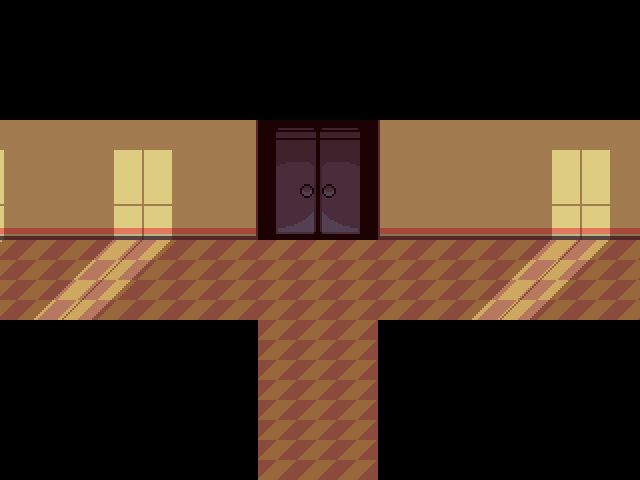

SCP-9722

SPECIAL CONTAIMENT PROCEDURES
SCP-9722-A is to be guarded by two Security Personnel with LEVEL-2 clearance under the claim that both are security guards for the Hometown Academy, All acess to SCP-9722-A needs to be authorized by Dr. Malakai Adebayo and then logged, all Personnel entering SCP-9722-A must wear a bodycam and a tracker to prevent any type of incidents inside SCP-9722-B As well as being escorted by Security Personnel, all types of equipment brought that are not under the obrigatory on the special contaiment procedures are to be logged on the expedition log. SCP-9722-1 Instances are to remain contained inside SCP-9722 until further notice, all interactions with SCP-9722-1 Instances are to be logged. SCP-9722-2 Instances are to only be interacted with if authorized by Dr. Malakai Adebayo, any samples taken from SCP-9722-2 Samples must be logged and stored in a secure location inside ██████ Hometown, United States of America.
DESCRIPTION
SCP-9722-A is a closet entrance located within the Hometown Academy, Its interior is dark, pitch dark, and has a temperature of 10°C, SCP-9772-A is a dimensional gateway to SCP-9722-B